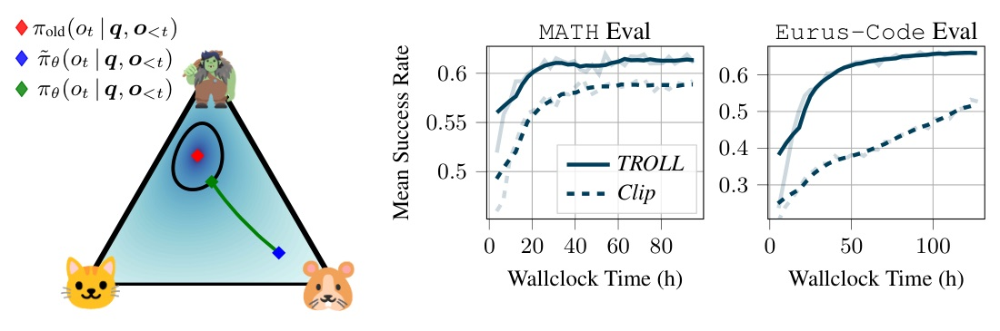
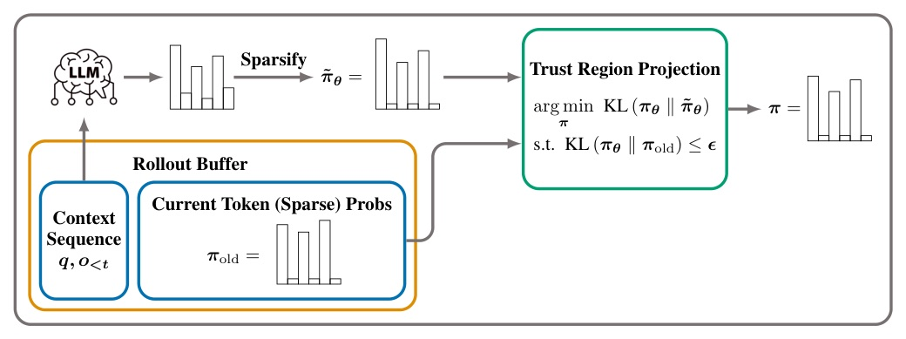
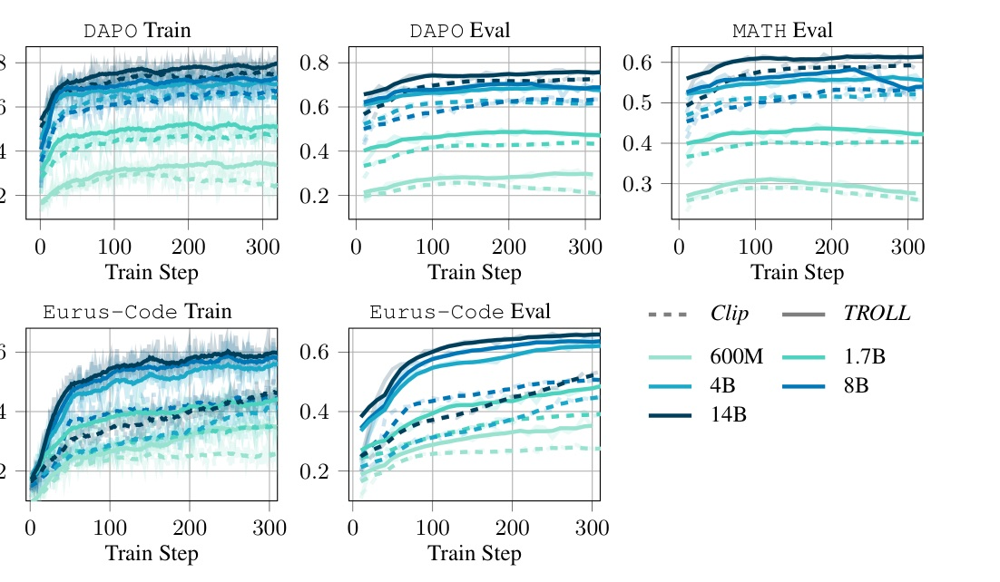
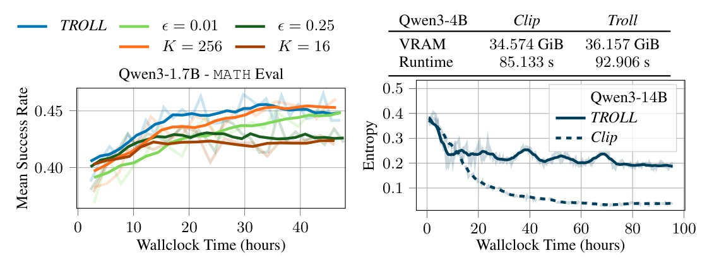

把 PPO-style clipping 換成 token-level KL trust-region projection：更穩的 RLVR 訓練，沒有推論額外負擔。

TROLL 把「ratio 截斷」改成
可微的 token-level KL 投影。
它不改 reward、也不換 advantage estimator；只替換 PPO-like objective 裡最粗糙的穩定化步驟。

對每個 response token：僅當 KL constraint 被違反時才解 projection；否則原 distribution 直接通過。
| Model / dataset | Clip | TROLL | Delta |
|---|---|---|---|
| Llama3.1-8B / GSM8K | 0.000 | 0.759 | +0.759 |
| Apertus-8B / GSM8K | 0.156 | 0.697 | +0.541 |
| Llama3.2-3B / GSM8K | 0.589 | 0.668 | +0.079 |
| SmolLM3-3B / DAPO | 0.580 | 0.606 | +0.026 |
| Qwen3-8B / Eurus-Math | 0.561 | 0.579 | +0.018 |

實線為 TROLL、虛線為 Clip；涵蓋 DAPO 與 Eurus-Code，不只是單一 final checkpoint。
| Qwen3-8B / DAPO-Eval | Clip | TROLL | Delta |
|---|---|---|---|
| GRPO | 0.640 | 0.691 | +0.051 |
| Dr.GRPO | 0.653 | 0.674 | +0.021 |
| PPO | 0.602 | 0.715 | +0.113 |
| GSPO | 0.000 | 0.706 | +0.706 |
| RF++ | 0.626 | 0.728 | +0.102 |
Table 1 的 GSPO Clip 為 0.000；文中將此描述為 Clip divergence，而 GSPO + TROLL 仍穩定。
Clip 把超界訊號截掉；
TROLL 把 distribution 拉回 KL-feasible region，再繼續學。

| Qwen3-4B controlled run | Clip | TROLL | Change |
|---|---|---|---|
| VRAM | 34.574 GiB | 36.157 GiB | +1.583 GiB |
| Runtime | 85.133 s | 92.906 s | +7.773 s |
We replace the clip objective with a novel discrete differentiable trust region projection, which provides principled token-level KL constraints.
以可微分的離散 trust-region projection 取代 clip objective，直接施加有原理的 token-level KL 約束。
using K=64 and delta=10−5 usually allows us to keep 99.999% of probability mass with only 5−10 average tokens.
K=64、delta=10^-5 時，通常只需平均 5–10 個 token 即可留下 99.999% 機率質量。
The observed stability improvements are thus not merely caused by more restrained tokens.
觀察到的穩定性改善，不只是因為約束了更多 token。
ICLR 2026 · Trust-region optimization for LLM RL post-training